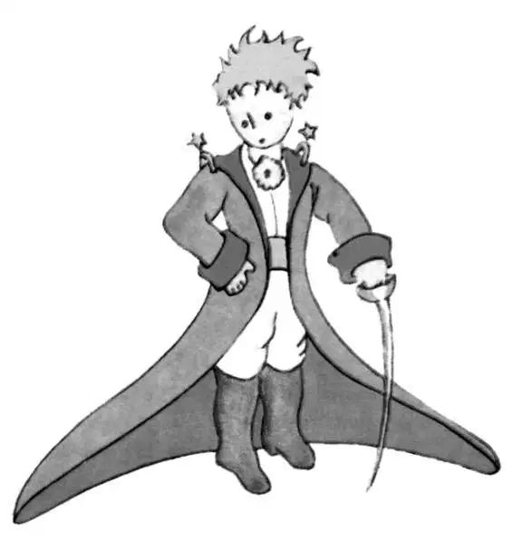
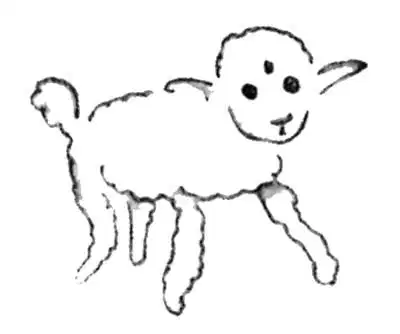
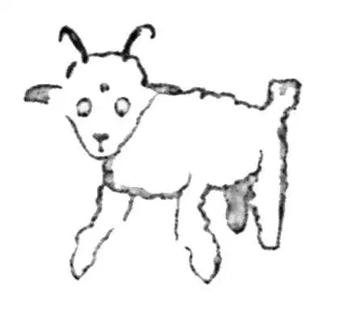
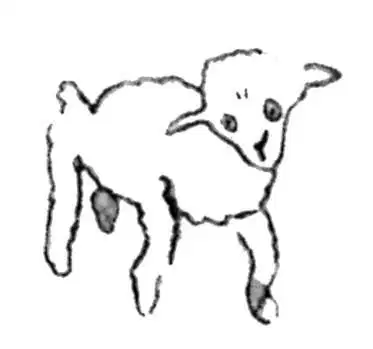
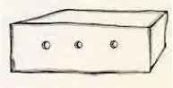

CHAPTER 2
第二章
—the narrator crashes in the desert and makes the acquaintance of the little prince
——叙述者在沙漠坠机，结识小王子
So I lived my life alone, without anyone that I could really talk to, until I had an accident with my plane in the Desert of Sahara, six years ago. Something was broken in my engine. And as I had with me neither a mechanic nor any passengers, I set myself to attempt the difficult repairs all alone. It was a question of life or death for me: I had scarcely enough drinking water to last a week.
我就这样孤零零地过着我的日子，找不到一个真正可以谈得来的人，直到六年前在撒哈拉沙漠发生的那次飞机事故。我的发动机的某个零件坏了。由于身边既没有机械师，也没有任何乘客，我就只得靠自己解决这个大难题，把飞机修好。对我来说，这个问题性命攸关：剩下的饮用水不足以维持一个星期。
The first night, then, I went to sleep on the sand, a thousand miles from any human habitation. I was more isolated than a shipwrecked sailor on a raft in the middle of the ocean. Thus you can imagine my amazement, at sunrise, when I was awakened by an odd little voice. It said:
接下来的第一天晚上，我睡在沙漠上，在人间烟火的一千英里之外。与汪洋大海中伏在木排上的遇难水手相比，我更加孤立无援。因此，可以想象，当第二天拂晓一个怪异的声音轻轻把我唤醒时，我有多惊奇。这个声音说：
"If you please—draw me a sheep!”
“如果你愿意的话，给我画只羊吧！”
"What!"
“什么！”
"Draw me a sheep!"
“给我画一只羊吧！”

I jumped to my feet, completely thunderstruck. I blinked my eyes hard. I looked carefully all around me. And I saw a most extraordinary small person, who stood there examining me with great seriousness. Here you may see the best portrait that, later, I was able to make of him. But my drawing is certainly very much less charming than its model.
我一下子站了起来，完全惊呆了。我使劲眨了眨眼睛。仔细地看了看周围。我见到一个特别奇怪的小人站在那里凝望着我，一脸的严肃。这里你看到的，可能是后来我给他画的最好的一幅画像。不过，与它的原型相比，我的画当然要逊色得多。
That, however, is not my fault. The grown-ups discouraged me in my painter's career when I was six years old, and I never learned to draw anything, except boas from the outside and boas from the inside.
但那并不是我的错。大人们在我六岁的时候打击了我对绘画生涯的热情，除了画出肚子里情形的蟒蛇和只有外部轮廓的蟒蛇，我就再也没学过画其他东西了。
Now I stared at this sudden apparition with my eyes fairly starting out of my head in astonishment. Remember, I had crashed in the desert a thousand miles from any inhabited region. And yet my little man seemed neither to be straying uncertainly among the sands, nor to be fainting from fatigue or hunger or thirst or fear. Nothing about him gave any suggestion of a child lost in the middle of the desert, a thousand miles from any human habitation. When at last I was able to speak, I said to him:
现在，我使劲睁大眼睛，惊讶地注视着这个突然出现的小东西。要知道，我可是坠机在这片远离人烟一千英里之外的沙漠上。而我面前的这个小人儿，既不像是在沙漠里迷失了方向，也没有半点因为疲惫、饥饿、口渴或是害怕而要昏倒的样子。一点也看不出来他是迷失在千里之外、渺无人烟的沙漠中的孩子。当我缓过神来，又能说话时，便对他说：
"But—what are you doing here?”
“可是——你在这做什么？”
And in answer he repeated, very slowly, as if he were speaking of a matter of great consequence: "If you please—draw me a sheep...”
而他仍是重复着先前的话，似乎在说一件特别重大的事情，不慌不忙地回答道：“如果你愿意，请给我画一只羊吧。”
When a mystery is too overpowering, one dare not disobey. Absurd as it might seem to me, a thousand miles from any human habitation and in danger of death, I took out of my pocket a sheet of paper and my fountain-pen. But then I remembered how my studies had been concentrated on geography, history, arithmetic, and grammar, and I told the little chap (a little crossly, too) that I did not know how to draw. He answered me:
当什么神秘的东西不可抗拒之时，你是不敢不从的。我虽然觉得荒谬，此刻我们远离人烟千里，危在旦夕，但我仍从兜里掏出一张纸和一支钢笔。然而此时我想起了我是如何专心学习地理、历史、算数和语法，于是我告诉这个小家伙（我有点冒火）我不知道怎么画画。他回答我说：
"That doesn't matter. Draw me a sheep..."
“没关系。给我画只羊……”
But I had never drawn a sheep. So I drew for him one of the two pictures I had drawn so often. It was that of the boa constrictor from the outside. And I was astounded to hear the little fellow greet it with,
可我从来没画过羊。因此我给他画了一幅我以前常画的两幅画中的一幅。就是那幅只画出外部轮廓的大蟒蛇。我很惊讶地听到这个小家伙看到画后这样叫道：
"No, no, no! I do not want an elephant inside a boa constrictor. A boa constrictor is a very dangerous creature, and an elephant is very cumbersome. Where I live, everything is very small. What I need is a sheep. Draw me a sheep."
“不对，不对，不对！我没让你画大蟒蛇肚子里的大象。大蟒蛇是非常危险的动物，而大象又太大，太笨重。我住的地方，什么东西都很小。我需要的是一只羊。给我画只羊。”
So then I made a drawing.
于是我又画了一幅。

He looked at it carefully, then he said:
他仔细地看着，然后说道：
"No. This sheep is already very sickly. Make me another."
“不好。这只羊已经病得不行了。再给我画一只吧。”

So I made another drawing.
于是我又画了一只。
My friend smiled gently and indulgently.
我这朋友温柔又淘气地笑了起来。
"You see yourself," he said, "that this is not a sheep. This is a ram. It has horns."
“你自己看吧，”他又说，“这不是一只绵羊。而是一只公羊。它有犄角呢。”
So then I did my drawing over once more.
于是我只好又画了起来。
But it was rejected too, just like the others.
可是和其他几张画一样，这一张也被拒绝了。

"This one is too old. I want a sheep that will live a long time."
“这只羊太老了。我想要一只可以活很久的羊。”
By this time my patience was exhausted, because I was in a hurry to start taking my engine apart. So I tossed off this drawing.
这次我可没有耐心了，因为我急着要拆开我的引擎。于是我草草地画了一幅。
And I threw out an explanation with it.
我匆忙解释道：
"This is only his box. The sheep you asked for is inside."
“这只是它的匣子。你要的羊就在里头。”

I was very surprised to see a light break over the face of my young judge:
看到我的小裁判脸上绽开了笑容，我惊讶极了。
"That is exactly the way I wanted it! Do you think that this sheep will have to have a great deal of grass?"
“这正是我想要的啊！你说这只羊会不会吃很多很多草呢？”
"Why?"
“为什么这么问？”
"Because where I live everything is very small..."
“因为我住的地方什么都很小……”
"There will surely be enough grass for him," I said. "It is a very small sheep that I have given you."
“肯定会有足够的草给他吃的。”我回答说，“我给你的是一只很小很小的羊。”
He bent his head over the drawing:
他把头靠近那张画：
"Not so small that—Look! He has gone to sleep...”
“没有那么小吧——看！他都已经睡了……”
And that is how I made the acquaintance of the little prince.
就这样，我结识了小王子。